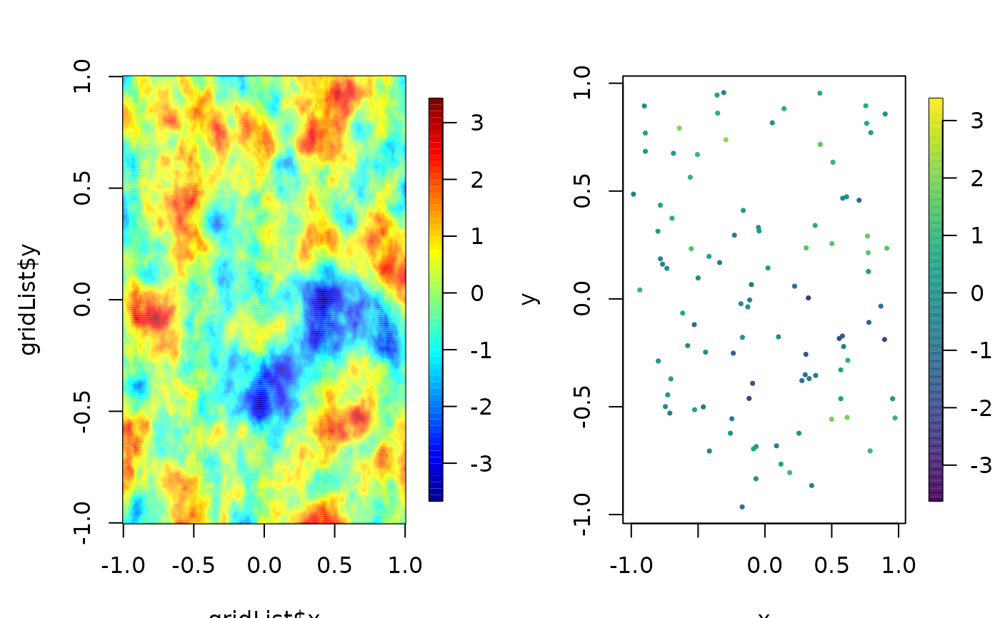

offGridWeights.RdBased on a stationary Gaussian process model these functions support fast prediction onto a grid using a sparse matrix approximation. They also allow for fast prediction to off-grid values (aka interpoltation) from an equally spaced rectangular grid and using a spatial model. The sparsity comes about because only a fixed number of neighboring grid points (NNSize) are used in the prediction. The prediction variance for off-grid location is also give in the returned object. These function are used as the basis for approximate conditional simulation for large spatial datasets asnd also for fast spatial prediction from irregular locations onto a grid.
offGridWeights(s, gridList, np = 2, mKrigObject = NULL, Covariance = NULL,
covArgs = NULL, aRange = NULL, sigma2 = NULL, giveWarnings = TRUE,
debug=FALSE)
offGridWeights1D(s, gridList, np = 2, mKrigObject = NULL,
Covariance = NULL,
covArgs = NULL, aRange = NULL, sigma2 = NULL, giveWarnings = TRUE,
debug=FALSE)
offGridWeights2D(s, gridList, np = 2, mKrigObject = NULL,
Covariance = NULL,
covArgs = NULL, aRange = NULL, sigma2 = NULL, giveWarnings = TRUE,
debug=FALSE)
addMarginsGridList( xObs, gridList, NNSize)
mKrigFastPredictSetup(mKrigObject,
gridList,
NNSize,
giveWarnings = TRUE)Off grid spatial locations
Off grid spatial locations
A list as the gridList format ( x and y components) that describes the
rectagular grid. The grid must have at least np extra grid points beyond
the range of the points in s
Number of nearest neighbor grid points to use for prediction. np = 1
will use the 4 grid points that bound the off grid point. np = 2
will be a 4X4 subgrid with the middle grid box containing the off grid point.
In general there will be (2*np)^2 neighboring points uses.
Same as np.
The output object (Aka a list with some specfic components.) from either mKrig or spatialProcess. This has the information about the covariance function used to do the Kriging. The following items are coded in place of not supplying this object. See the example below for more details.
The stationary covariance function (taking pairwise distances as its first argument.)
If mKrigObject is not specified a list giving any additional arguments for the covariance function.
The range parameter.
Marginal variance of the process.
If TRUE will warn if two or more observations are in the same grid box. See details below.
If TRUE returns intermediate calculations and structures for debugging and checking.
This function creates the interpolation weights taking advantage of some efficiency in the covariance function being stationary, use of a fixed configuration of nearest neighbors, and Kriging predictions from a rectangular grid.
The returned matrix is in spam sparse matrix format. See example below for the "one-liner" to make the prediction once the weights are computed. Although created primarily for conditional simulation of a spatial process this function is also useful for interpolating to off grid locations from a rectangular field.
The function offGridWeights is a simple wrapper to call either the 1D or 2D functions
In most cases one would not use these approximations for a 1D problem. However, the 1D algorithm is included as a separate function for testing and also because this is easier to read and understand the conversion between the Kriging weights for each point and the sparse matrix encoding of them.
The interpolation errors are also computed based on the nearest neighbor
predictions. This is returned as a sparse matrix in the component SE.
If all observations are in different grid boxes then SE is diagonal
and agrees with the square root of the component predctionVariance but
if multiple observations are in the same grid box then SE has blocks of upper
triangular matrices that can be used to simulate the prediction error
dependence among observations in the same grid box.
Explicitly if obj is the output object and there are nObs
observations then
will simulate a prediction error that includes the dependence. Note that in the case that there all observations are in separate grid boxes this code line is the same as
It is always true that the prediction variance is given by
diag( obj$SE%*% t( obj$SE)).
The user is also referred to the testing scripts
offGridWeights.test.R and
offGridWeights.testNEW.Rin tests where the
Kriging predictions and standard errors are computed explicitly and
tested against the sparse
matrix computation. This is helpful in defining exactly what
is being computed.
A sparse matrix that is of dimension mXn with m the number of locations (rows) in s and n being the total number of grid points. n = length(gridList$x)*length(gridList$y)
A vector of length as the rows of s with the Kriging prediction variance based on the nearest neighbor prediction and the specified covariance function.
A sparse matrix that can be used to simulate dependence among prediction errors for observations in the same grid box. (See explanation above.)
Bailey, Maggie D., Soutir Bandyopadhyay, and Douglas Nychka. "Adapting conditional simulation using circulant embedding for irregularly spaced spatial data." Stat 11.1 (2022): e446.
# an M by M grid
M<- 400
xGrid<- seq( -1, 1, length.out=M)
gridList<- list( x= xGrid,
y= xGrid
)
np<- 3
n<- 100
# sample n locations but avoid margins
set.seed(123)
s<- matrix( runif(n*2, xGrid[(np+1)],xGrid[(M-np)]),
n, 2 )
obj<- offGridWeights( s, gridList, np=3,
Covariance="Matern",
aRange = .1, sigma2= 1.0,
covArgs= list( smoothness=1.0)
)
# make the predictions by obj$B%*%c(y)
# where y is the matrix of values on the grid
# try it out on a simulated Matern field
CEobj<- circulantEmbeddingSetup( gridList,
cov.args=list(
Covariance="Matern",
aRange = .1,
smoothness=1.0)
)
set.seed( 333)
Z<- circulantEmbedding(CEobj)
#
# Note that grid values are "unrolled" as a vector
# for multiplication
# predOffGrid<- obj$B%*% c( Z)
predOffGrid<- obj$B%*% c( Z)
set.panel( 1,2)
#> plot window will lay out plots in a 1 by 2 matrix
zr<- range( c(Z))
image.plot(gridList$x, gridList$y, Z, zlim=zr)
bubblePlot( s[,1],s[,2], z= predOffGrid , size=.5,
highlight=FALSE, zlim=zr)

set.panel()
#> plot window will lay out plots in a 1 by 1 matrix